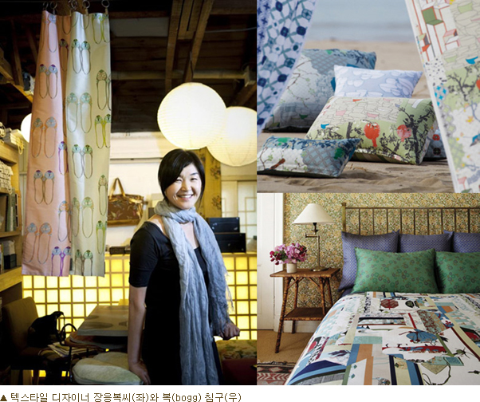

□ 세계적인 텍스타일 디자이너 장응복씨와 손잡고 ‘복’ 론칭, 패치워크 침구 트렌드 선도
□ ‘서울리빙디자인페어’서 지난 2년간 선보인 ‘복’ 시리즈 현장 판매 진행
프레스티지 홈 인테리어 브랜드 Bogg은 27일부터 3월3일까지 삼성동 Coex에서 개최되는 ‘서울 리빙 디자인 페어’에 침구 브랜드 ‘복(bogg)’을 출품한다.
1994년 처음 개막 이후 19년째 진행되고 있는 ‘서울 리빙 디자인 페어’는 국내외 리빙 산업을 선도하는 브랜드, 디자이너와 함께 최신 트렌드를 반영한 콘텐츠들을 매년 선보이고 있다. 올해는 ‘新가족풍경’을 주제로 리빙 트렌드를 선도하는 대표 브랜드들이 전시된다.
‘서울 리빙 디자인 페어’에서 메인 브랜드로 소개되는 ‘복’은 독창적인 패치워크 방식의 디자인으로 모던한 한국적인 미를 담아낸 홈쇼핑 인기 침구브랜드로, 국내 대표 인테리어 전시회인 ‘서울 리빙 디자인 페어’에 출품한 것은 국내 홈쇼핑 브랜드로는 최초다.
‘복’은 지난 2011년 3월 세계적인 텍스타일 디자이너인 장응복씨와 손잡고 론칭한 온리원 브랜드(자체 제작 브랜드)로, 지난해 프랑스 파리에서 열린 세계 최대 인테리어 전시회 ‘메종&오브제(Maison&Objet)’에도 단독 전시되며 전 세계 바이어들에게 큰 호평을 받기도 했다.
장응복 디자이너는 최근 인테리어계 핫 키워드인 ‘업사이클링(Up-Cycling: 버려진 제품을 더 가치가 높은 제품으로 재탄생시키는 것)’을 인테리어계에 최초로 소개한 장본인이다. 버려지는 자투리 천 조각을 이어 붙이는 전통 기술 패치워크(Patchwork)를 가구, 침구, 쿠션, 커튼, 조명 등 다양한 아이템에 적용시킨 것. 장응복 디자이너는 ‘모노콜렉숀’을 설립하고 국내외 최고급 호텔의 인테리어를 도맡으며 독창성을 인정받고 있다.
‘복’ 역시 모던한 패턴을 자투리 천에 프린트해 이어 붙인 독특한 디자인에 프리미엄 의류에만 사용되는 최고급 면화를 사용해, 백화점 고급 브랜드 못지않은 하이엔드 침구 브랜드로 손꼽히고 있다. ‘복’은 일반 홈쇼핑 침구 브랜드보다 3~4배 더 비싼 가격에도 불구하고 누적 300억 원 매출을 올리고 있다.
이선영 CJ오쇼핑 언더웨어/침구사업팀 팀장은 “’복’은 한국적이고 모던한 감성을 표현한 하나의 예술 작품으로 국내외 침구 업계에서 큰 관심을 받고 있으며, 홈쇼핑 업계에서 불고 있는 패치워크 침구 트렌드를 선도하고 있다”며, “이번 전시회 출품은 인테리어 전문 브랜드에 뒤지지 않는 ‘복’의 제품력을 인정받은 것으로, 인테리어 업계 내에서 ‘복’의 위상과 인지도가 높아지는 기회가 될 것으로 기대한다”고 말했다.
‘복’은 2011년 론칭 이후 선보인 로맨틱한 지중해풍의 ‘프로방스 드림’, 육각조각잇기 패턴 적용한 ‘잉글리쉬 가든’, 꽃신을 모티브로 한 ‘스위트 블라썸’ 등의 디자인을 ‘서울 리빙 디자인 페어’에서 선보이고 현장 판매도 진행한다.
|